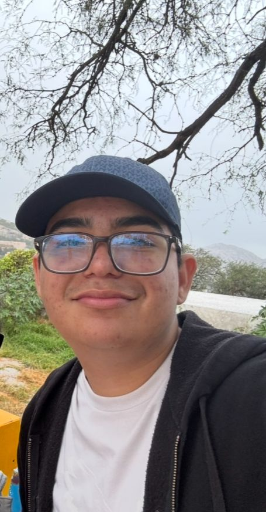
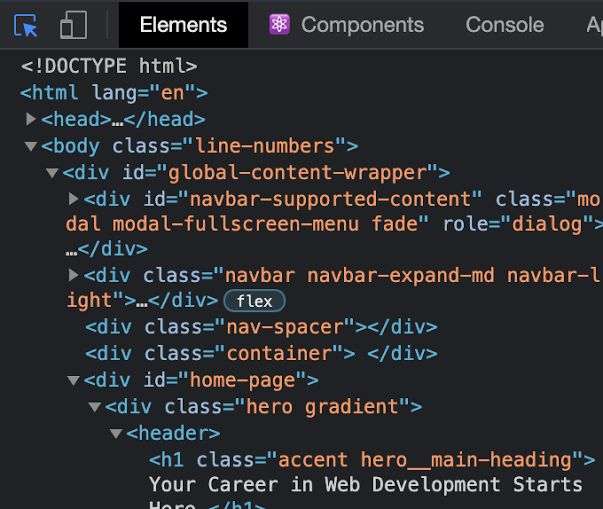
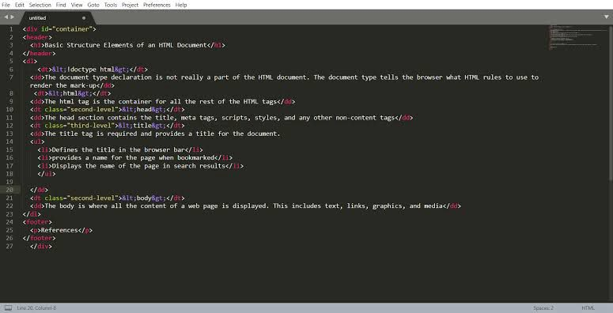

Por José Emilio Salcedo Perez
Hola, Me llamo José Emilio Salcedo Perez, actualmente tengo 15 años y estudio en el CBTIS 118 en la carrera de mecatronica generación 2024-2027. Esta es mi historia...
E logrado tener buen promedio durante toda mi educación y un gran logro que e tenido es ingresar al CBTIS 118. También e ganado varios concursos de ajedrez y por ultimo pero no menos importante e logrado diagnosticar fallas de vehículos de combustión interna o gasolina mejor dicho. Cada día en el CBTIS es una meta para mi. Una de mis mayores metas es ser un empresario exitoso y Ing en mecánica automotriz y mecatronica
Estos últimos años e estado restaurando mi Vocho que a sido toda una odisea que espero ya termine pronto. Otros proyectos son los circuitos que el maestro de mecatronica me deja hacer como el de la imagen :
En el futuro, me gustaría terminar mi carrera y también estudiar mecánica automotriz pero mi mas grande meta es ser un empresario exitoso
A lo largo de este toda mi vida e aprendido que nada es fácil ni nada te va a caer del cielo a si que Echale ganas y mis consejos para otros estudiantes son que no dejen las cosas al ultimo momento
Estas imágenes me ayudaron a realizar correctamente esta página web:
 